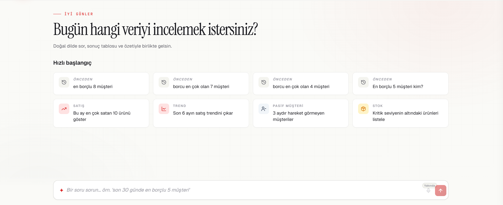

Türkçe soru-cevap
Patron, mali müşavir ve operasyon yöneticisi rapor ekranlarında dolaşmadan sorusunu günlük dille yazar.
Logo Tiger ERP verinizle Türkçe konuşun. Questinal sorunuzu anlar, doğru ve önceden test edilmiş raporu bulur, sonucu sade bir dille anlatır.

Questinal, soruyu SQL'e çevirmek yerine kurumunuz için hazırlanmış parametrik rapor kataloğuyla eşleştirir. Tarih, firma, ürün ve müşteri gibi parametreleri sorudan çıkarır; yalnızca seçilen onaylı raporu çalıştırır.
Patron, mali müşavir ve operasyon yöneticisi rapor ekranlarında dolaşmadan sorusunu günlük dille yazar.
Sorular yalnızca önceden hazırlanmış, test edilmiş ve sınırları belli raporlara yönlendirilir.
Questinal SQL Server'ınızın yanında çalışır; ERP verisini dışarı taşımaz ve yalnızca okuma erişimi kullanır.
İş kullanıcısının hızını artırırken veritabanını serbest sorgulara açmaz.
Esnek görünür; ancak yanlış, ağır veya zararlı sorgu üretme riski taşır. Sonucu denetlemek zordur.
Güvenlidir; fakat her soru için doğru menüyü, filtreyi ve rapor yapısını bilmek gerekir.
Doğal dille sorun; arkada yalnızca onaylanmış hazır raporlar çalışsın. Esnek iletişim, kontrollü sonuç.
Zekâ “hangi soruyu hangi rapor cevaplar?” katmanındadır. Veri, tarih ve hesap tarafı deterministik olarak çalışır.
Takip sorularını önceki konuşmanın bağlamıyla tamamlar.
Sorunun anlamını rapor kataloğundaki adaylarla karşılaştırır.
En uygun raporu gerekçesi ve güven bilgisiyle belirler; uygun rapor yoksa bunu açıkça söyler.
“Geçen ay” ifadesini kesin tarih aralığına dönüştürür; firma, ürün ve müşteri bilgisini ayırır.
Sorudaki müşteri veya ürünün ERP'de gerçekten bulunup bulunmadığını kontrol eder.
Yalnızca seçili hazır raporu güvenli parametre bağlama, zaman aşımı ve satır sınırıyla çalıştırır.
Sonucu sade Türkçeyle özetler; toplam ve kıyasları kod tarafında hesaplar.
Yayınlanacak örnekler ürün kataloğunda doğrulanmış raporlarla sınırlandırılacaktır.
Dönem karşılaştırmaları, iade netlenmiş satışlar ve en çok satan ürünler.
Müşteri bakiyesi, en iyi müşteriler ve alacak yaşlandırma görünümü.
Yavaş dönen ürünler, depo bazında değer ve kritik stok listeleri.
Tedarikçi analizi, ortalama alış fiyatı ve nakit akışı özeti.
Questinal, sohbet kolaylığını doğruluk ve erişim sınırlarından ödün vermeden sağlar.
Serbest SQL yoktur. Kullanıcı metni sorguya eklenmez; yalnızca güvenli parametreler bağlanır.
Okuma erişimi · Onaylı rapor · Denetlenebilir akışTarih, toplam, ortalama ve kıyas hesapları LLM'e bırakılmaz. İade ve iptaller rapor kurallarında netlenir.
Kod tarafında hesap · Varlık doğrulamaTürkçe karakter farklılıklarını, muhasebe dilini ve Logo Tiger şemasının gerçek yapılarını bilir.
Kurum içinde · FeyoNova imzalıQuestinal'ın kullanıcı ve yönetici yüzeylerini tek tek inceleyin. Sekmeler, ekranı büyüterek gösterir ve o bölümde ne yapıldığını kısa bir açıklamayla anlatır.
Firma ve dönem bağlamını seçin; hazır sorulardan başlayın veya doğrudan iş sorunuzu yazın. Sonuç tablosu ve kısa özet aynı akışta gelir.

Teknik sınırlar ürünün sonradan eklenmiş güvenlik ayarları değil, çalışma modelinin kendisidir.
Katalog dışı hiçbir sorgu üretilmez veya çalıştırılmaz.
Questinal ERP verisine yalnızca SELECT yetkisiyle erişir.
Kullanıcı metni doğrudan sorguya yapıştırılmaz; enjeksiyon yüzeyi oluşturulmaz.
Her soru, seçilen rapor, güven bilgisi ve çalışma süresi kaydedilir.
Yeni ERP sistemleri paralel bir adapter ile eklenebilir; çekirdek yapının değişmesi gerekmez.
Hayır. Questinal serbest SQL yazmaz. Soruları önceden hazırlanmış ve test edilmiş raporlara yönlendirir.
Hayır. Questinal kurumunuzda, SQL Server'ın yanında çalışır ve ERP verisine yalnızca okuma erişimi kullanır.
En kötü senaryo yanlış rapor seçimidir; veri değişmez. Seçilen rapor gerekçesiyle gösterilir ve kullanıcı doğru raporu seçerek geri bildirim verebilir.
Questinal, kurumunuz için hazırlanmış ve onaylanmış rapor kataloğunun kapsadığı satış, müşteri, stok, satınalma ve finans sorularını yanıtlar. Katalog dışında kalan bir soruda cevap uydurmaz; kapsam dışında olduğunu açıkça belirtir.
Evet. Kurumunuzda kullanılan raporlar incelenerek Questinal kataloğuna güvenli ve parametrik araçlar olarak eklenebilir. Böylece kullanıcılar mevcut rapor sonuçlarına doğal dille ulaşabilir.
Questinal'ın kurumunuzdaki rapor kataloğuna ve çalışma biçimine nasıl uyarlanacağını birlikte değerlendirelim.